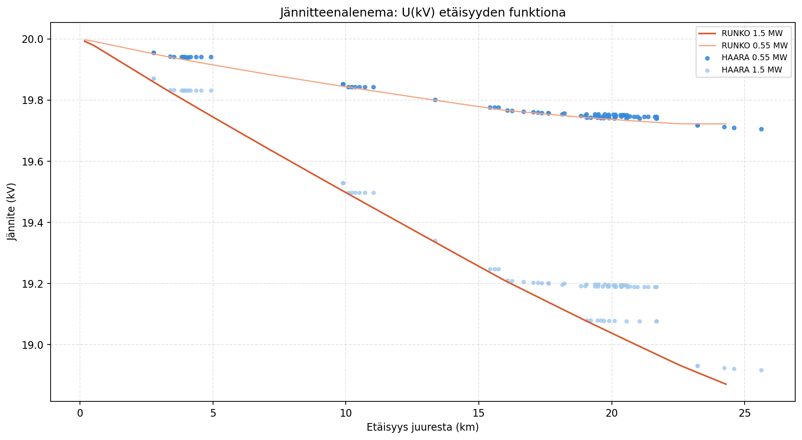
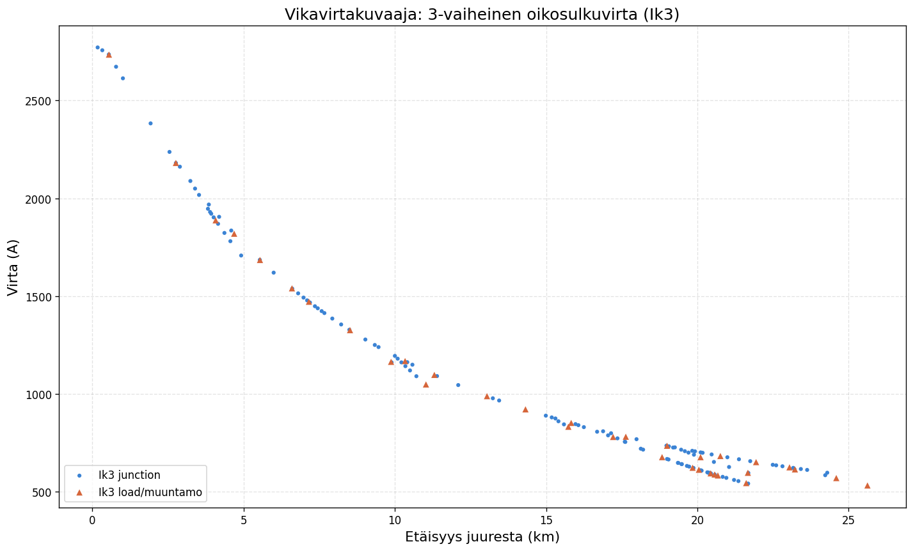
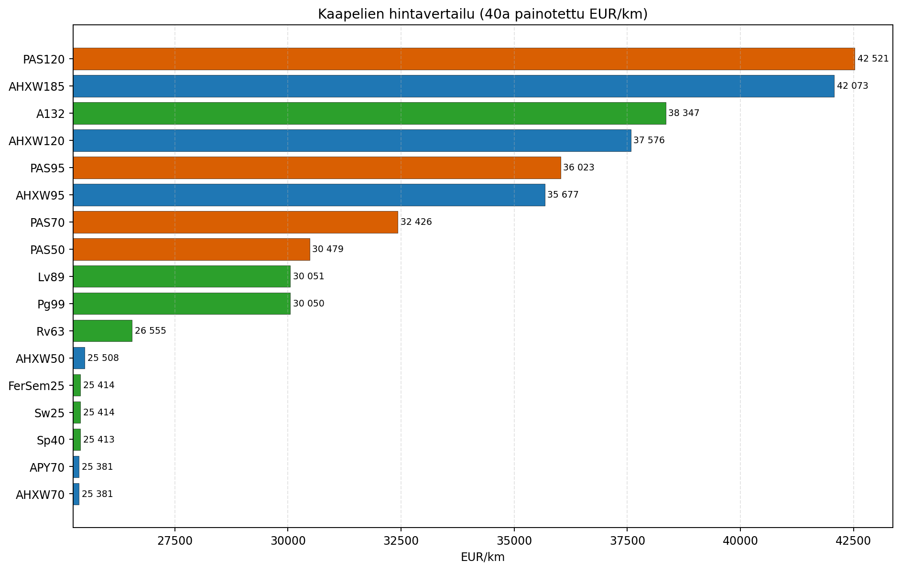

Sähkönjakelutekniikan harjoitustyö
Tässä työssä rakensin Excel-pohjaisen laskentamallin, jolla vertailtiin keskijänniteverkon saneerausvaihtoehtoja sekä teknisestä että taloudellisesta näkökulmasta.
Excelissä yhdistin tekniset reunaehdot, kuten jännitteenaleneman, vikavirran ja kuormitettavuuden, taloudelliseen vertailuun, jossa huomioitiin investoinnit, häviöt ja keskeytyskustannusvaikutukset. Pythonilla varmistin tulosten loogisuutta ja visualisoin vertailua.
Tarkoitus ei ollut tehdä vain yksittäisiä sähköteknisiä tarkistuksia, vaan rakentaa laskentamalli verkon kehittämisvaihtoehtojen vertailuun koko johtolähdön tasolla. Näin saneerausvalinta voitiin perustella samassa kokonaisuudessa teknisten reunaehtojen, kokonaiskustannuksen ja toteutuskelpoisuuden näkökulmasta.
Graafiteorian hyödyntäminen harjoitustyössä
Harjoitustyön laskenta kulminoituu suunnattuun puurakenteiseen verkkomallinnukseen, jossa jokaisella solmulla on vanhempi (parent) ja mahdolliset lapsisolmut. Käytännössä tämä oli tapa muuttaa hajanaiset lähtötiedot laskettavaksi kokonaisuudeksi.
1) root = syöttöpiste, 2) junction = haaroitussolmu, 3) load = kuormasolmu / muuntamo.
Rakenne on anonymisoitu turvallisuussyistä, mutta etäisyys juuresta ja reunojen pituudet näytetään oikeilla arvoilla.
Kartassa voit näyttää kuormasolmujen etäisyydet sekä halutessa reunapituudet. Hover-teksti näyttää aina valitun solmun tai reunan tarkan arvon.
Solmu- ja reunarakenteella koko verkon laskenta voitiin tehdä johdonmukaisesti yhdestä syöttöpisteestä ulospäin. Kun jokaiselle osuudelle tunnetaan topologinen paikka, voidaan jännitteenalenema, vikavirta ja muut kumulatiiviset suureet johtaa koko verkolle samalla logiikalla ja käyttää tuloksia suoraan saneerausvalinnan perusteluun.
Tämän osuuden rakentaminen vei käytännössä suurimman osan harjoitustyöstä. Excel-laskentaa, verkon topologian jäsentämistä ja karttapohjan tekemistä piti kehittää rinnakkain, jotta tulokset vastasivat samaa rakennetta. Karttapohja koottiin Google My Mapsin avulla. Suurin työ ei lopulta ollut itse yhtälöissä, vaan siinä, että verkko piti ensin saada kuvattua loogisesti ja eheästi harjoitustyön ajan puitteissa.
Excelin pääpointti
Excelin tarkoituksena oli johdinvälikohtainen teknistaloudellinen elinkaarikustannusvertailu, jos alkuperäinen johdin korvattaisiin jollain valitun listan vaihtoehdoista.
Valinnan ehtona oli ratkaisun on tekninen kelvollisuus ja taloudellisuus.
Excel toimi tässä työssä päätöksenteon laskentamoottorina, ei pelkkänä taulukkona. Jokaiselle johto-osuudelle arvioitiin vaihtoehdot samalla logiikalla, jotta voitiin löytää ratkaisu, jossa elinkaarikustannus pysyy hallittuna ja samalla verkon käyttöä rajaavat tekniset ehdot täyttyvät.
Jännitteenalenema
Kuvaaja näyttää jännitteen etäisyyden funktiona erikseen runko- ja haaralinjoille.
Jännitteenalenema laskettiin sähkön laadun varmistamiseksi koko säteittäinen verkko huomioiden myös kauimmaisissa pisteissä. Tällä voitiin arvioida nykyisen verkon jännitteenalenemaa eri tilanteissa ja muodostuuko käyttörajoitteita kuormituksen kasvaessa. Lähtötiedoissa oli annettuna eteläisen jakorajan siirtokyky, jolloin päätettiin tarkastella jännitteenalenemaa sijaiskytkentätilanteessa lisäämällä 1 MW runkojohtoon yksinkertaisella Excel logiikalla.

Vikavirtakuvaaja
Kuvaaja näyttää 3-vaiheisen oikosulkuvirran profiilin verkon etäisyyden funktiona.
Vikavirran laskenta tehtiin oikosulkukestoisuusvaatimusten tarkistamiseen, jotta jokainen valittu johto-osuus kestää vikatilanteen aiheuttaman lämpörasituksen. Käytännössä kyse oli termisen keston varmistamisesta: kustannuksiltaan edullinen vaihtoehto hylättiin, jos se ei täyttänyt oikosulkutilanteen teknistä mitoitusta. Harjoitustyön lähtötiedoissa ei oltu annettuna päämuuntajan kokoluokkaa, jolloin suurta epävarmuutta tuo sen oletettu impedanssi. Pääidea tästä kuitenkin saadaan selville, eli oikosulkuvirta laskee etäisyyden mukaan ja alkuun pitää sijoittaa paksumpaa poikkipinta-alaista johdinta.

Kaapelien Hintavertailu
Kaaviossa on johdintyypeittäin painotettu elinkaarikustannus (EUR/km).
Hintavertailun tarkoitus oli tehdä johdinvalinnasta teknis-taloudellinen eikä vain investointihinnan perusteella tehty päätös. Vertailussa painotettiin elinkaarikustannusnäkökulmaa diskonttaamalla pitkälle tulevaisuuteen sijoittuvat kustannukset. Tässä huomioidaan rakentamisen lisäksi häviöiden ja käyttöaikaisten vaikutusten merkitys saneerausvalintaan, kuten KAH säästöt / tappiot, raivauskustannukset ja tehohäviöt.
Kuvaajaa käytettiin johdinvaihtoehtojen vertailuun verkon eri osuuksilla yhdessä teknisten reunaehtojen kanssa. Saneerausvalinta ei siis ollut yhden yleisesti halvimman kaapelityypin valinta, vaan osuuskohtainen ratkaisu, jossa kokonaiskustannus ja tekninen toimivuus täyttyvät samanaikaisesti. Tämä kuvaaja kuitenkin kertoo keskimääräisen kustannuksen jokaiselle kohdalle, jonne johdin teknisesti sopii. Excelissä on näkyvissä pivot taulukko, josta voi suodattaa halutun välin jokaiselle johdinosuudelle.
Käytännössä tämä tulos tarkoitti harjoitustyössä sitä, että maakaapeloinnin elinkaarikustannukset olivat vain aavistuksen kilpailukykyisempiä siirrettävän tehon ollessa maltillinen. Tekniikan (muuntamot, päätteet tms.) kokonaishintaero kääntää kuitenkin lopullisen kannattavuuden päälaelleen. Laki kuitenkin edellyttää suurhäiriövarmuuden parantamista, jolloin päätimme paikoittaista maakaapelointia metsä-alueilla annetun budjetin rajoissa. Mutta haarojen päihin asensimme satelliittimuuntamoita, jolloin ero tekniikoiden välillä ei ollut merkittävä. Hinnat ovat Energiaviraston vuoden 2025 yksikköhintatalukosta, jolloin ne eivät ole eksakteja, mutta harjoitustyön tarkoituksena oli kuitenkin osoittaa kriittistä ajattelua ja laskennallista osaamista.
